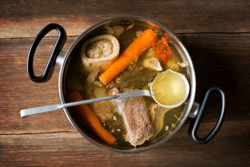

Beef Stock

Ingredients
- 5 lbs assorted beef bones
- 1 medium yellow onion
- 3 carrots, peeled
- 3 stalks of celery
- 3 sprigs of parsley
- 6-10 whole black peppercorns
- water
Preparation
- Preheat oven to 400 degrees fahrenheit.
- While oven is preheating, roughly chop peeled carrots, onion and celery into 1 inch slices. Add beef bones and chopped vegetables to a lightly oiled baking sheet.
- Once oven is hot, place sheet in middle rack and let sit for 45 minutes.
- Remove from oven and place sheet contents into a large stock pot, and add peppercorns and parsley.
- Cover pot contents entirely with cold water, and bring to boil. No lid!
- Once boiling, reduce hit to a simmer and let cook for a minimum of 3 hours.
- Once reduced, strain contents into a large container and let cool, Then refrigerate or freeze for future use!